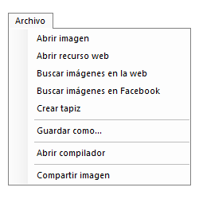
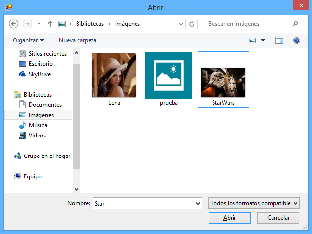
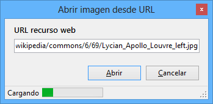
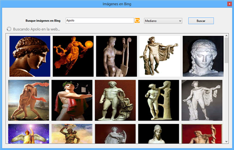
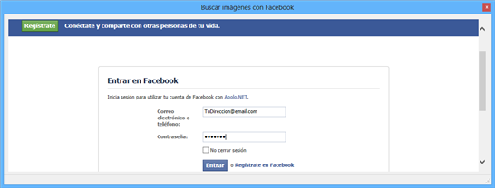
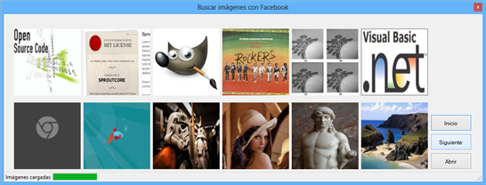

Primer elemento de la barra superior. A continuación se muestra una imagen del menú.

Ilustración 1. Menú archivo.


Pulsando en la opción abrir imagen, se muestra un cuadro de diálogo en el que se puede seleccionar una imagen.

Ilustración 2. Abrir imagen desde archivo.


Los formatos admitidos son, BMP, GIF, JPEG, PNG y TIFF.
Esta opción permite cargar directamente una URL que únicamente contenga una imagen en un formato compatible.

Ilustración 3. Abrir recurso web.


En la parte inferior muestra una barra de carga e información del estado (cargando, recurso no encontrado, etc.).
Con esta opción se puede buscar directamente imágenes en Internet. Las búsquedas de recursos se procesan mediante el API de Bing imágenes.



Hay que introducir el/los término/s a buscar, seleccionar en el desplegable situado a la derecha del cuadro de búsqueda, el tamaño de la imagen y pulsar en el botón Buscar. Adicionalmente, se puede activar la casilla Activar precarga, y no se cargará una vista previa de las imágenes (miniatura), sino la imagen a tamaño real.
Una vez cargadas las imágenes, basta con hacer clic encima de ella y pulsar en el botón Abrir y, tras unos instantes (en caso de estar activada la precarga es instantáneo), se verá la imagen en la aplicación principal.
Con el botón Más, se verán las siguientes 10 imágenes estando disponibles hasta un máximo de 50 imágenes por búsqueda.
Esta opción permite iniciar sesión con tu cuenta de Facebook y poder abrir directamente las imágenes en las que estés etiquetado.
Primeramente se muestra un formulario con el inicio de sesión de Facebook. Una vez introducidos los datos (correo electrónico y contraseña), se debe pulsar en el botón Entrar.

Ilustración 5. Inicio de sesión con Facebook.


Una vez se ha iniciado sesión, basta con hacer clic en la imagen que se quiera abrir y pulsar en el botón abrir. Tras unos instantes, se cargará en el formulario principal.

Ilustración 6. Abrir imágenes desde Facebook.


Pulsando en el botón Siguiente se muestran las siguientes imágenes, y pulsando Inicio se vuelve a las primeras 10.
Muestra un cuadro de diálogo para crear un tapiz rectangular con las dimensiones, color y nombre elegidas por el usuario.
En el botón del color, se despliega el cuadro de diálogo de Windows para seleccionar o crear un nuevo color.
Pulsando en la opción Guardar como, se muestra un cuadro de diálogo en el que se puede guardar una imagen en la ruta especificada.
Los formatos admitidos son, BMP, GIF, JPEG, PNG y TIFF.
Abre una ventana con un compilador para Visual Basic .NET. La aplicación originalmente ha sido creada por Matthew Manela y disponible en Github para su descarga. Se ha adaptado la aplicación para el fin último de Apolo, crear algoritmos para tratamiento de imágenes.
En la parte superior hay un desplegable para seleccionar algoritmos para diferentes efectos, como son, invertir colores, aumentar brillo, etc. Siguiendo el esquema de cualquiera de los algoritmos, se pueden modificar los colores de forma muy fácil, y, una vez creado el código fuente, se debe pulsar en el botón superior denominado Run.
Al salir del compilador se mostrará una ventana con las imágenes almacenadas en el directorio del compilador.
A veces la aplicación se queda congelada unos instantes hasta que muestra esta ventana. En caso de que no llegue a cargase correctamente notificarlo como error.
Se trata de un servidor público donde poder compartir y ver las imágenes que suban los usuarios. Estás imágenes deben subirse con una pequeña descripción y su nombre. Opcionalmente hay una sección para poder valorar las imágenes y así dar una opinión de la misma.
Una vez se ha pulsado sobre la opción Compartir imágenes, aparece un pequeño recuadro que indica que se está estableciendo conexión. Tras unos segundos se despliega una ventana donde poco a poco se irán cargando las 10 primeras imágenes disponibles.
En la parte izquierda, se puede subir la imagen con su nombre y descripción. Pulsando en el botón Imagen actual se abrirá la imagen que actualmente está en la aplicación principal, para así poder compartirla. Desplegando el menú completo (pulsando en Ver listado completo de imágenes), se puede ver un listado con todas las imágenes del servidor y la posibilidad de valorarlas.
Como se puede observar en la imagen, se está valorando con 5 estrellas la imagen actual (LenaBGR), cuya puntuación actual es de 4.7 estrellas.
Esta sección se desarrolla con más detalle en el apartado Cloud.
Created with the Personal Edition of HelpNDoc: Free Kindle producer